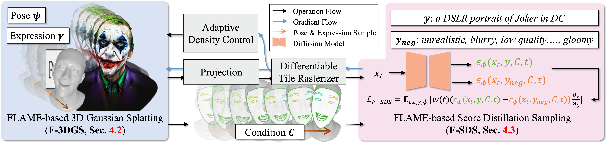

HeadStudio: Text to Animatable Head Avatars
with 3D Gaussian Splatting
Arxiv 2024
Zhenglin Zhou, Fan Ma, Hehe Fan, Yi Yang✉
ReLER, CCAI, Zhejiang University
Abstract

Creating digital avatars from textual prompts has long been a desirable yet challenging task. Despite the promising outcomes obtained through 2D diffusion priors in recent works, current methods face challenges in achieving high-quality and animated avatars effectively. In this paper, we present HeadStudio, a novel framework that utilizes 3D Gaussian splatting to generate realistic and animated avatars from text prompts. Our method drives 3D Gaussians semantically to create a flexible and achievable appearance through the intermediate FLAME representation. Specifically, we incorporate the FLAME into both 3D representation and score distillation: 1) FLAME-based 3D Gaussian splatting, driving 3D Gaussian points by rigging each point to a FLAME mesh. 2) FLAME-based score distillation sampling, utilizing FLAME-based fine-grained control signal to guide score distillation from the text prompt. Extensive experiments demonstrate the efficacy of HeadStudio in generating animatable avatars from textual prompts, exhibiting visually appealing appearances.
Video
Method Overview
Framework of HeadStudio, which integrates FLAME into 3D Gaussian splatting and score distillation sampling. 1) FLAME-based 3D Gaussian Splatting (F-3DGS): each 3D point is rigged to a FLAME mesh, and then rotated, scaled, and translated by the mesh deformation. 2) textbf{FLAME-based Score Distillation Sampling (F-SDS): utilizing FLAME-based fine-grained control signals to guide score distillation. Furthermore, we also introduce additional enhancements, including uniform super-resolution and mesh regularization in F-3DGS, training with animation and denoised score distillation in F-SDS.